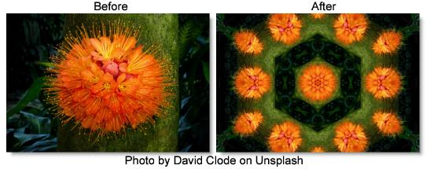

S_KaleidoRadial
Description
Simulates a traditional 2 or 3 mirror kaleidoscope. You see a pie-slice shaped piece of the image through the angle between the mirrors, and mirror-reflected copies of it in the rest of the image.
The S_KaleidoRadial filter comes from the Emmy award winning Boris FX Sapphire filter set.
Category
Stylize.
Controls
Presets
To select a preset, pick one from the Presets window.
Center
Center location of the kaleidoscoped image.
Z Dist
Scales the distance of the entire result in or out from the Center. Increase to zoom out, decrease to zoom in.
Slices
Sets how many slices the image will be broken up into. Each slice corresponds to the area between the mirrors in a traditional kaleidoscope. Turn this up to get a more abstract look, and down to get fewer, wider slices. Fractional numbers here will get you one fractional slice. For a fully symmetrical look, use integers like 3, 4, 5, and so on.
Rotate
Rotates the whole pattern about the Center by this many degrees.
Rotate Kaleido
Rotates the kaleidoscope itself without rotating the image under or inside it.
Rotate Inside
Rotates the image under the kaleidoscope about the Center, much like rotating the object box at the end of a traditional kaleidoscope.
Kaleido Amount
Adjusts the overall amount of distortion applied to the image. Set this to 0 to leave the image unchanged or to 1 for a normal kaleidoscope pattern.
Wrap
Determines the method for accessing outside the borders of the image. This is used only if the image inside the kaleidoscope is not contained within the shape of mirrors.
No
Creates black beyond the borders.
Tile
Repeats a copy of the image.
Filter
If enabled, the image is resampled using pixel averaging. This removes aliasing and gives a higher quality result, although it may not be necessary if your image is smooth with no sharp edges or high frequencies.
Show Center
Enables/disables the on-screen control for adjusting the Center parameter.